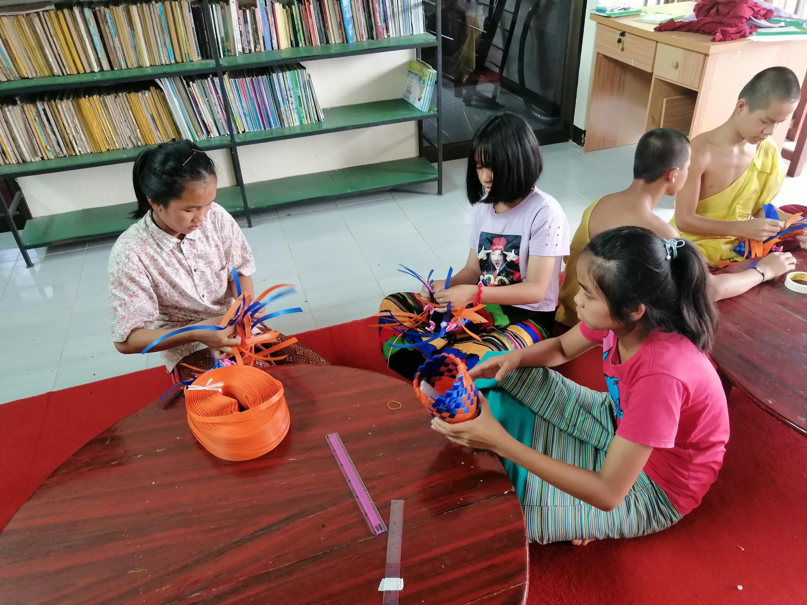

Homeschooling
To facilitate continuous learning for children whose education is suffering
from the unstable political situation, due to the military coup, Hi Burma has established a range of Homeschooling programmes across Myanmar. For many reasons, but mainly the crimes against humanity committed by the military, parents did not send their sons and daughters to school when the military reopened them. That is when Homeschooling was started by our teachers, mostly in remote rural areas. They are very enthusiastic about learning and teaching and are passionate about making valuable contributions to their respective communities.
Our teachers create engaging lessons that emphasize the use of creative and critical thinking in daily life. These lessons are designed to help students develop the learning and communication skills they need for the 21st century. To enable students to work efficiently and productively in their various situations, teachers provide group activities in addition to a variety of classes centered on science, maths, English, and art. We have Homeschooling centres in the states of Kachin, Kayah and Shan , also in the regions of Mandalay, and Sagaing.Read More...
Online English Course
In this time of political unrest, online teaching has been instrumental in
enabling students to continue their education. Online teaching is the practice of children learning through the use of social networks and digital platforms. The aim of our online programs is to make learning interactive, easy and fun. Our online teaching priority is given to impoverished and disadvantaged students who for a variety of reasons are unable to continue their education. Children from different regions, ethnic groups and religions enroll in our classes. Classes in our online courses are set up so that adults can participate as well as children. Our teachers have in-person teaching experience and are knowledgeable about using online platforms. The classes use a curriculum designed by our teachers based on children’s level of English language. The lessons are planned in a way that engages and stimulates children of all ages and is in keeping with modern teaching strategies that make learning interesting and worthwhile.Read More...

Teacher Training
Hi Burma conducts a series of Teacher Training sessions for CDM
teachers and other individuals who are passionate about teaching. Teacher Training sessions aim to upgrade teaching in respect to: lesson planning; use of online teaching platforms; and the application of our ‘Golden Teacher Standards’. As an improved education system is fundamental to Myanmar’s social and economic development, Hi Burma aims to provide high-quality educational experiences for children, youth and teachers. In addition, we endeavour to support education programs, both technically and financially, in refugee camps and other places where internally displaced people seek safety. Read More...